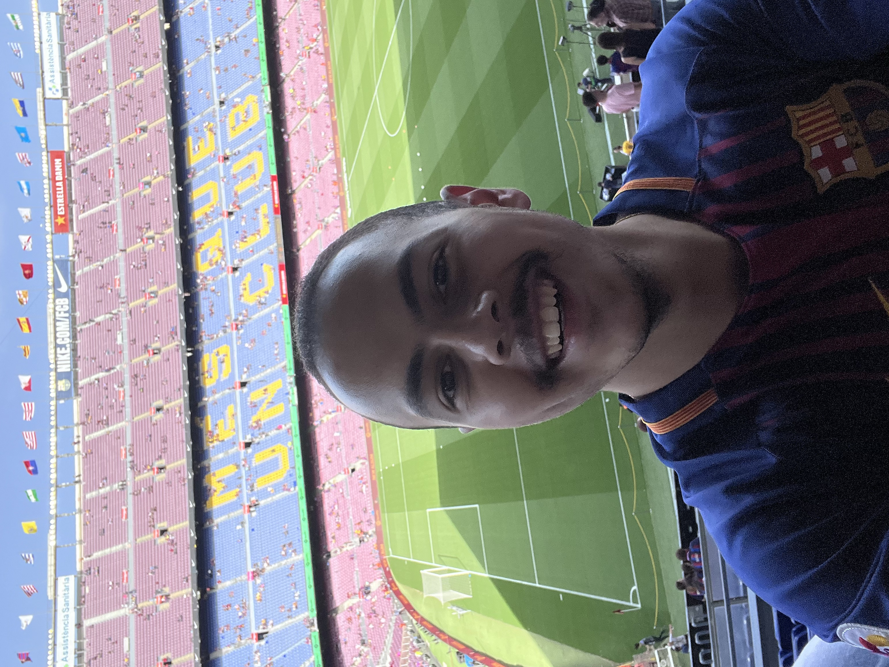
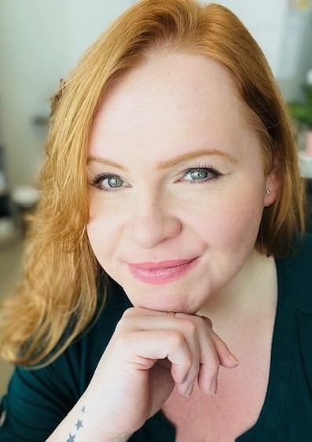

Dr. Henry Nguyen, MD FRCPC
Henry Nguyen is a hepatologist at the University of Calgary and the founder of Liver Health Connect. Born and raised in Calgary, he is dedicated to advancing liver health through equitable access to education and resources, in service of the well-being of all members of the community he calls home.
Meet the People Behind LHC
Dr. Kim Cheema, MD FRCPC
Dr. Cheema is a nephrologist who volunteers with Liver Health Connect. She previously served as Site Lead at the AHS Richmond Road Diagnostic Centre, where she worked across many specialties to support patient services. At LHC, she helps guide partnerships with universities, health organizations, and community groups, ensuring they reflect and strengthen LHC's mission of education, equity, and service.

George Tadros
George Tadros is currently enrolled at the University of Calgary Cumming School of Medicine. George plays a crucial role in connecting with our communities and managing our digital presence. His dedication to developing social media accounts, maintaining our website, and building outreach bridges helps ensure that Liver Health Connect's message reaches and resonates widely. We deeply appreciate his energy and creativity in driving our engagement efforts.
Dr. Joanna Dionne, MD FRCPC
Joanna is an Intensive Care Physician from McMaster University. Joanna's visionary input has been instrumental in shaping our social media campaigns. As a Creative Partner, her fresh ideas and thoughtful suggestions have helped bring new energy and focus to our outreach efforts. We are grateful for her inspiring collaboration and invaluable contributions.

Julia Johnston
Julia plays an essential role behind the scenes by organizing meetings with community leaders, coordinating logistics, and helping procure important resources for our outreach events. Her dedication and organizational skills keep Liver Health Connect running smoothly and connected to the community. We truly appreciate her invaluable support.
Also Contributing to Our Mission
Jimmie Nguyen
Jimmie is an Environmental Scientist with expertise in technical project coordination across Western Canada. At LHC, he applies his strong organizational skills and experience to lead event logistics, ensuring our outreach efforts are efficient and well-executed.
Virve Aljas
Virve, as a patient partner, has generously lent her creative talents to digitize our logo and design materials for our outreach tents. Her hands-on support has been key in bringing our visual identity to life and strengthening our community presence. We deeply appreciate her meaningful partnership.
Want to get involved?
We're always looking for passionate individuals to join our mission of liver health education and community outreach.
Contact Us